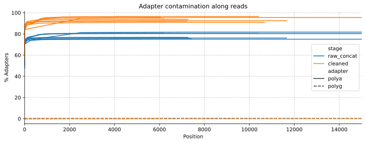

We can now run mgs-workflow’s QC and filtering steps on ONT data. Here is a quick analysis of the results of the Zephyr 5b run from November 13, 2024. We found very high polyA contamination, a lot of very short reads (<500bp), but good quality scores for those reads that reach the expected length of 4000bp.
Assessing basic stats for both raw and cleaned reads
Notably, the GC content and mean sequence length of most sequencing files are fairly low (~20% GC, mean length ~ 320 bp). We’d expect mean sequence length to be close to 4kbp, and the GC content to be closer to 40%. Duplication rates are also fairly high, with up to 60%.
PolyA contamination is very high. The higher contamination levels in cleaned reads may be due to the removal of very low-complexity reads that didn’t get classified as being polyA-contaminated.
Code
fig, ax = plt.subplots(dpi=300, figsize=(10, 4))sns.lineplot(data=test_adapter_stats, x='position', y='pc_adapters', hue='stage', ax=ax,units="sample", style="adapter", estimator=None, legend=True)# Set common properties for both subplotsax.set_xlabel('Position')ax.set_ylabel('% Adapters')ax.grid(True, linestyle='--', alpha=0.7)ax.set_xlim(0, 15000)# Set titles for each subplotax.set_title('Adapter contamination along reads')# Remove top and right spines for both subplotsax.spines['top'].set_visible(False)ax.spines['right'].set_visible(False)fig.tight_layout()
Figure 2.1: PolyA/PolyQ contamination along reads

Comparing base quality stats
Most reads have a good average Phred score up until around 6000bp, dropping off thereafter. Cleaning increases Phred scores for most samples. The low scores at the start of the reads are likely due to the large number of short low-quality reads.
The modal mean phred score for reads is around 24, which isn’t great. Potentially this average would be improved by I) stronger trimming of reads once their quality drops below a certain threshold, and II) removal of reads that are short, and probably very low quality (see the low quality scores of over the first few hundred base pair positions in Figure 3.1).
As observed in the initial summary stats, most reads in the sample are very short (Figure 5.1). Zooming in in Figure 5.2 shows that there are a couple of reads that have the expected length of 4000bp.
---title: "Quality control of Zephyr 5b"author: "Simon Grimm"date: 2024-12-09format: html: code-fold: true code-tools: true code-link: true df-print: paged toc: true toc-depth: 2 cap-location: bottom fig-format: svg crossref: fig-title: Figure fig-prefix: Figure chapters: truejupyter: venvtitle-block-banner: "#5cb2a0"---We can now run mgs-workflow's QC and filtering steps on ONT data. Here is a quick analysis of the results of the Zephyr 5b run from November 13, 2024. We found very high polyA contamination, a lot of very short reads (<500bp), but good quality scores for those reads that reach the expected length of 4000bp.```{python}#| label: data-paths#| include: falseimport osimport pandas as pdimport matplotlib.pyplot as pltimport seaborn as snstest_dir ="mgs-results/NAO-ONT-20241113-Zephyr5b"test_output_dir = os.path.join(test_dir, "output")test_results_dir = os.path.join(test_output_dir, "results")test_basic_stats_path = os.path.join(test_results_dir, "qc_basic_stats.tsv.gz")test_adapter_stats_path = os.path.join(test_results_dir, "qc_adapter_stats.tsv.gz")test_quality_base_stats_path = os.path.join(test_results_dir, "qc_quality_base_stats.tsv.gz")test_quality_seq_stats_path = os.path.join(test_results_dir, "qc_quality_sequence_stats.tsv.gz")test_read_lengths_path = os.path.join(test_results_dir, "qc_length_stats.tsv.gz")```# Assessing basic stats for both raw and cleaned readsNotably, the GC content and mean sequence length of most sequencing files are fairly low (~20% GC, mean length ~ 320 bp). We'd expect mean sequence length to be close to 4kbp, and the GC content to be closer to 40%. Duplication rates are also fairly high, with up to 60%.```{python}#| label: load-basic-stats#| echo: false#| include: falsetest_basic_stats = pd.read_csv(test_basic_stats_path, sep='\t')``````{python}#| label: tbl-basic-stats#| tbl-cap: Summary statistics for raw ONT readtest_basic_stats["barcode-div"] = test_basic_stats["sample"].apply(lambda x: f"{x.split('-')[-2]}-div{x.split('-')[-1].replace('div000', '')}")test_basic_stats_tbl= test_basic_stats[["barcode-div", "percent_gc", "mean_seq_len", "n_read_pairs", "percent_duplicates", "n_bases_approx", "stage"]]test_basic_stats_tbl = test_basic_stats_tbl[test_basic_stats_tbl["stage"] =="raw_concat"]test_basic_stats_tbl = test_basic_stats_tbl.drop(columns=["stage"])# Display the resulttest_basic_stats_tbl.sort_values(by="barcode-div").set_index(["barcode-div"])```# Adapter contamination stats```{python}#| label: load-adapter-stats#| echo: falsetest_adapter_stats = pd.read_csv(test_adapter_stats_path, sep='\t')```PolyA contamination is very high. The higher contamination levels in cleaned reads may be due to the removal of very low-complexity reads that didn't get classified as being polyA-contaminated.```{python}#| label: fig-adapter-stats-comparison#| fig-cap: PolyA/PolyQ contamination along reads#| fig-cap-location: topfig, ax = plt.subplots(dpi=300, figsize=(10, 4))sns.lineplot(data=test_adapter_stats, x='position', y='pc_adapters', hue='stage', ax=ax,units="sample", style="adapter", estimator=None, legend=True)# Set common properties for both subplotsax.set_xlabel('Position')ax.set_ylabel('% Adapters')ax.grid(True, linestyle='--', alpha=0.7)ax.set_xlim(0, 15000)# Set titles for each subplotax.set_title('Adapter contamination along reads')# Remove top and right spines for both subplotsax.spines['top'].set_visible(False)ax.spines['right'].set_visible(False)fig.tight_layout()```# Comparing base quality stats```{python}#| label: load-quality-base-stats#| echo: false#|test_quality_base_stats = pd.read_csv(test_quality_base_stats_path, sep='\t')```Most reads have a good average Phred score up until around 6000bp, dropping off thereafter. Cleaning increases Phred scores for most samples. The low scores at the start of the reads are likely due to the large number of short low-quality reads.```{python}#| label: fig-quality-base-stats-comparison#| fig-cap: Mean phred scores along the read#| fig-cap-location: topfig, ax = plt.subplots(dpi=300, figsize=(10, 4))sns.lineplot(data=test_quality_base_stats, x='position', y='mean_phred_score', hue='stage', units="sample", ax=ax,estimator=None, legend=True)# ax.set_title('Mean phred scores along reads')# Add horizontal lines at Phred scores 10, 20, 30, 40ax.grid(True, linestyle='--', alpha=0.7)ax.set_xlim(0, 15000)# for phred in [10, 20, 30, 40]:# ax.axhline(y=phred, color='gray', linestyle='--', alpha=0.5, linewidth=1, zorder=-2)ax.spines['top'].set_visible(False)ax.spines['right'].set_visible(False)```# Comparing sequence quality stats```{python}#| label: load-quality-sequence-stats#| echo: false#| include: false#|test_quality_seq_stats = pd.read_csv(test_quality_seq_stats_path, sep='\t')```The modal mean phred score for reads is around 24, which isn't great. Potentially this average would be improved by I) stronger trimming of reads once their quality drops below a certain threshold, and II) removal of reads that are short, and probably very low quality (see the low quality scores of over the first few hundred base pair positions in @fig-quality-base-stats-comparison).```{python}#| label: fig-quality-sequence-stats-comparison#| fig-cap: Average Phred scores of sequences#| fig-cap-location: topfig, ax = plt.subplots(dpi=300, figsize=(10, 4))sns.lineplot(data=test_quality_seq_stats, x='mean_phred_score', y='n_sequences', hue='stage', ax=ax,units="sample", estimator=None, legend=True)ax.grid(True, linestyle='--', alpha=0.7)ax.spines['top'].set_visible(False)ax.spines['right'].set_visible(False)```# Read lengthsAs observed in the initial summary stats, most reads in the sample are very short (@fig-read-lengths-comparison). Zooming in in @fig-read-lengths-comparison-zoom shows that there are a couple of reads that have the expected length of 4000bp.```{python}#| label: load-read-lengths#| echo: false#| include: false#| warning: falsetest_read_lengths = pd.read_csv(test_read_lengths_path, sep='\t')``````{python}#| label: fig-read-lengths-comparison#| fig-cap: Read lengths (high-level)#| fig-cap-location: top#| warning: falsefig, ax = plt.subplots(dpi=300, figsize=(10, 4))test_read_lengths_cleaned = test_read_lengths[test_read_lengths["stage"] =="cleaned"]test_read_lengths_cleaned["Treatment"] = test_read_lengths_cleaned["sample"].apply(lambda x: "Filtration + Concentration"if"12"in x else"Filtration")sns.lineplot(data=test_read_lengths_cleaned, x='length', y='n_sequences', hue='Treatment', ax=ax, units="sample", estimator=None, legend=True)ax.grid(True, linestyle='--', alpha=0.7)ax.set_xlim(0, 6500)ax.set_ylim(0, 1000)ax.set_xlabel('Read length')ax.set_ylabel('Number of sequences')ax.spines['top'].set_visible(False)ax.spines['right'].set_visible(False)``````{python}#| label: fig-read-lengths-comparison-zoom#| fig-cap: Read lengths (zoomed in)#| fig-cap-location: top#| warning: falsefig, ax = plt.subplots(dpi=300, figsize=(10, 4))test_read_lengths_cleaned = test_read_lengths[test_read_lengths["stage"] =="cleaned"]test_read_lengths_cleaned["Treatment"] = test_read_lengths_cleaned["sample"].apply(lambda x: "Filtration + Concentration"if"12"in x else"Filtration")sns.lineplot(data=test_read_lengths_cleaned, x='length', y='n_sequences', hue='Treatment', ax=ax, units="sample", estimator=None, legend=True)ax.grid(True, linestyle='--', alpha=0.7)ax.set_xlim(500, 8000)ax.set_ylim(0, 50)ax.set_xlabel('Read length')ax.set_ylabel('Number of sequences')ax.spines['top'].set_visible(False)ax.spines['right'].set_visible(False)```